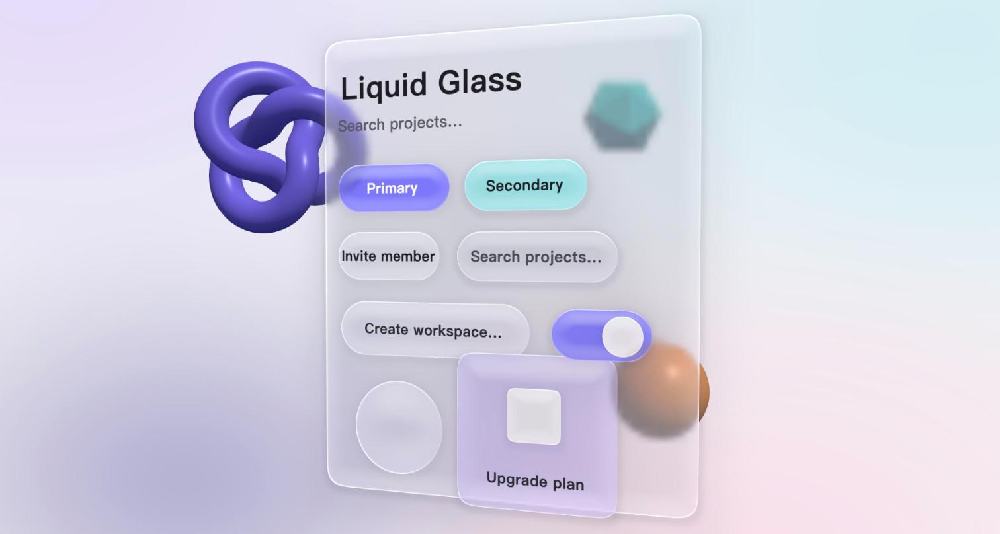
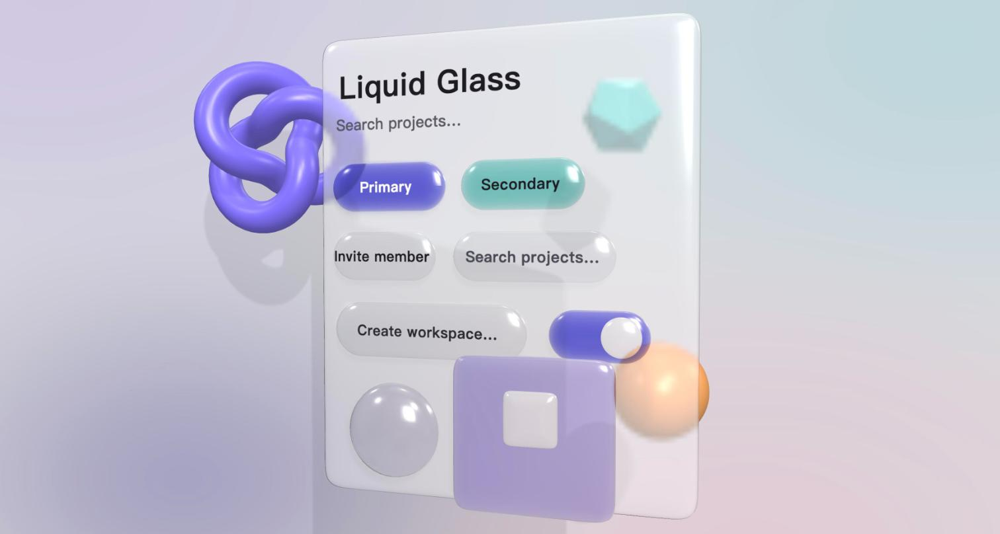
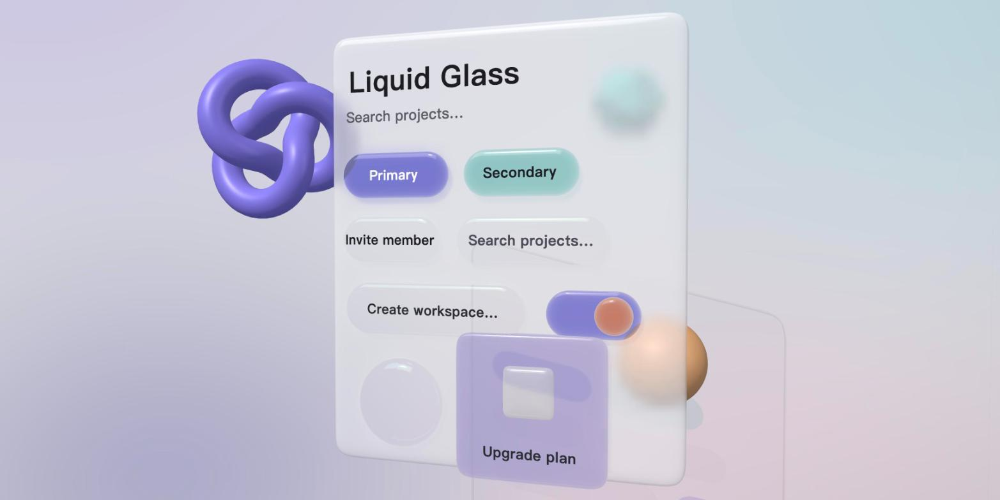
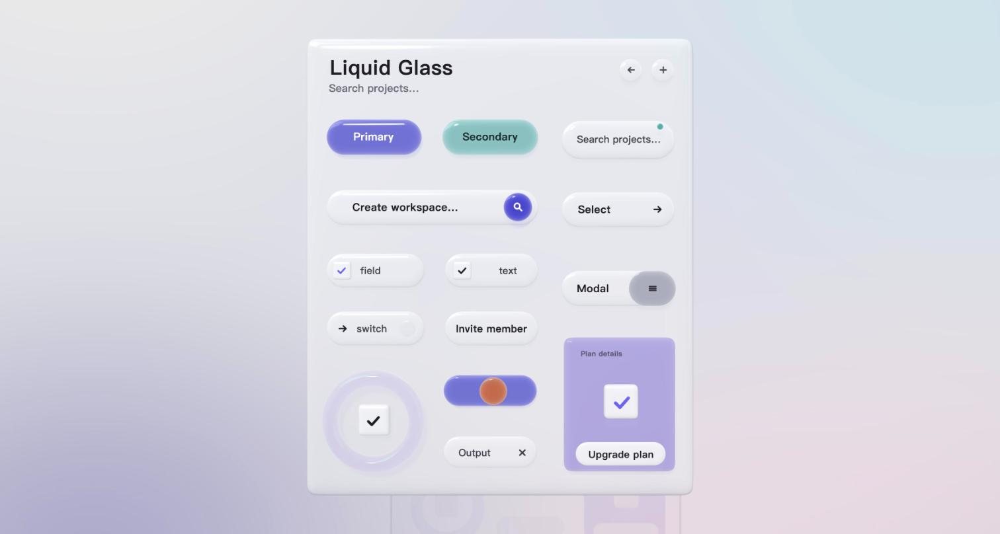
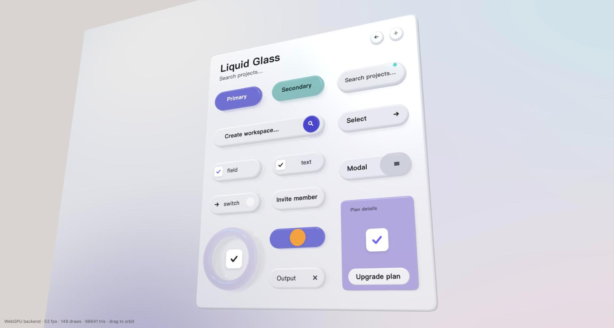
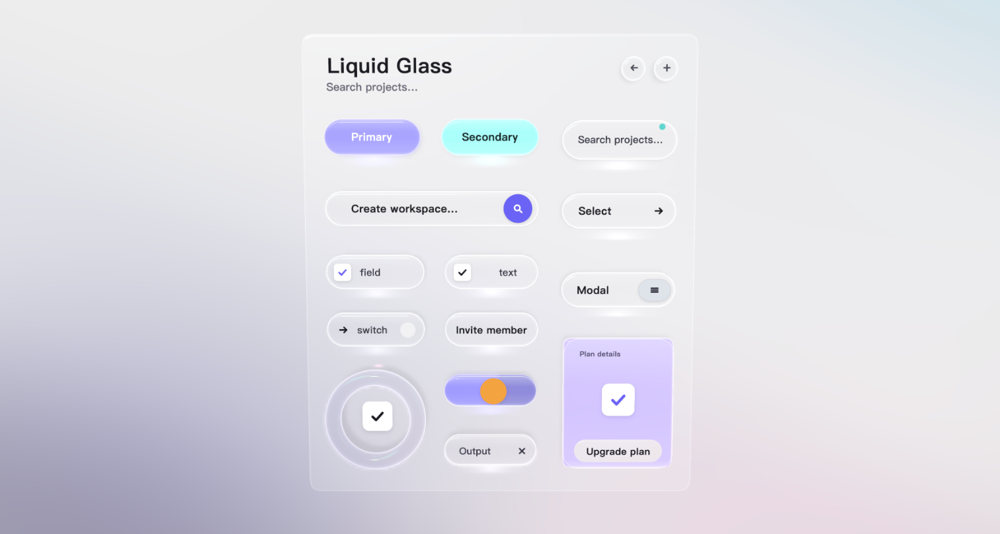
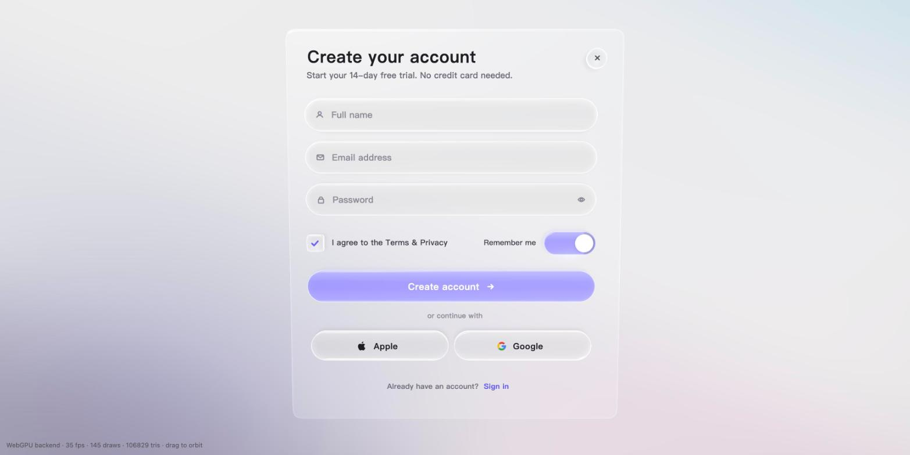

把 UI 画进 3D 空间：11 轮迭代下的精雕细琢Drawing UI inside 3D space: eleven rounds of polish
UI 既然主要由 AI 来写，就不必再被 HTML 和 DOM 限制。我们在 three.js 里从零做一套 Liquid Glass 风格的 3D 组件库，这篇讲为什么要这么做，以及一块玻璃按钮从「平面假 3D」到「真玻璃块」改了哪些东西、为什么改。If UI is now mostly written by AI, it no longer has to live inside HTML and the DOM. We are building a Liquid Glass style 3D component library on three.js from scratch. This post is about why, and about what changed, and why, as one glass button went from "fake 3D on a plane" to a real block of glass.
先看结果：右上角「打开实验」是一张可输入的注册表单，可见界面画在 three.js 的 canvas 里，文字输入使用输入法代理。按钮是有厚度的透明玻璃块，颜色从玻璃内部发出来，影子投在底板上，底板倒映着按钮。左键拖动平移、右键拖动旋转、滚轮缩放，可以从不同视角看厚度。
这是开源 3D UI 框架 ThreeDUI 的第一个样张（github.com/putcn/ThreeDUI）。下面讲为什么做它，以及这块玻璃是怎么一步步改出来的。
为什么把 UI 画进 3D 空间
四个原因，按重要性排：
- 写 UI 的主体变了。 现在界面代码主要由 AI coding agent 来写，人只负责看结果、提意见。过去「3D UI 太复杂、没人能维护」这个顾虑，前提是人在写。当复杂度由 agent 承担，我们可以把 API 做得复杂一点、描述清楚一点，换来远超 DOM 的可定制性——只要文档对 agent 足够清楚。
- 表现力。 DOM 只能在平面上模拟厚度、光影、材质。放进 3D 引擎之后，厚度、折射、反射、投影、透视都是真的，而且和场景里其它东西共享同一套光。这篇后面会反复看到：真的东西不需要调，假的东西永远调不完。
- GPU 越来越强。 手机 GPU 已经能稳定跑这种每帧几次全屏采样、带阴影贴图和平面反射的场景。three.js 的 WebGPURenderer 在 WebGPU 不可用时自动回落 WebGL2，同一套代码。
- 跨平台。 画在 canvas 里的东西，在浏览器、Electron、Tauri、各种 webview 乃至 XR 头显里长得一样，交互也在 canvas 内闭环。
所以目标是：一套 Vue 语法可写的 3D 组件库，容器可以放进任意 3D 场景，视觉按苹果最新的 Liquid Glass 来，基础组件覆盖 Tailwind 的那一套，以完整框架 + UI 标准的方式开源。
先回答「怎么渲染」
动手前做了两轮调研。结论简单说：
- 生态里最成熟的 canvas UI 库（pmndrs/uikit）只支持 WebGL、中文基本不可用、输入法代理放在屏幕外，而且它自己的 v2 准备重写渲染层。所以我们自己写内核，只借它的设计。
- 渲染后端选 three.js 的 WebGPURenderer + TSL：一套节点材质两个后端，内置 backdrop 采样节点，玻璃折射几乎是免费的。
- 布局用 Yoga（flexbox），文字第一版用 Canvas2D 按需栅格到 atlas（永远不缺中文字），输入法用 Flutter web 的做法（把代理输入框定位到光标处）。
然后就开始做那块玻璃。
第一版：平面上伪造的 3D

第一版是一个平面 quad，用 shader 算出圆角矩形的距离场，再从距离场推出边缘高度、法线、折射偏移、色散、高光。这是 CSS/SVG 玻璃实现的思路，三小时就出效果，WebGPU 和 WebGL2 两个后端像素级一致。
它被否掉了，理由是对的：既然已经在 3D 空间里渲染，厚度、高光、阴影就应该用 3D 的方式来做，而不是 2D 模拟。模拟的东西每加一个特征就要多写一段公式，而且它们永远不会和场景里其它物体的光照一致。
第二版：真几何、真光照、真阴影

于是玻璃变成了真实的实体网格：圆角矩形轮廓拉出厚度，边缘有倒角剖面。材质基于 three.js 的 PBR 节点材质，用它内置的 backdropNode 钩子替换透射项——高光、Fresnel、环境反射全部由引擎提供，我们只写「透过玻璃看到后面的像」这一项。阴影是方差阴影贴图，按钮投到面板上，面板投到墙上。
第一次出图之前还踩了一个典型的坑：网格绕序反了，正面被剔除，看到的一直是平的背面，表现为「怎么调都没高光」。用法线采样定位后一行改好。
出来的东西是对的，但像塑料糖。原因有三：倒角做成了整个半圆的枕形；双层高光加强环境反射给了大面积的柔和高光，这正是塑料的特征；散射项太重，不透。
第三版到第六版：学参考图
接下来几轮都在对着一张参考图改。每一轮改的都是一个具体的、能说清原因的东西：

- 顶边那条细亮线 出不来，是因为环境贴图太均匀。换成程序化的棚拍环境（左上一个大柔光箱、底部一条细光带），倒角面真实反射它，亮线就有了。
- 彩色玻璃下面应该有同色的光晕。 阴影贴图是二值的。我先手写了一个「从灯光视角渲染透过率」的 pass，然后发现 three.js 原生支持彩色透射阴影（
shadowMap.transmitted+castShadowNode），删掉自己写的换成引擎的。 - 投在背景墙上的影子被删掉了。 它透过半透明面板看起来像污渍。UI 元素只投到自己的面板上。

- 面板改成乳白磨砂，不再透出物体；布局按参考图逐元素量坐标还原。

- 按钮的剖面错了。 参考图是「直切下去的厚度 + 顶面一圈小圆角」，既有直角的干练又有圆润。枕形改成 fillet 剖面：竖直侧壁、顶圆角 5 pt、底圆角 3 pt。
- 底板要倒映组件。 面板加平面反射，按磨砂程度模糊后低比例混入。
- 不是所有东西都该是几何。 checkbox 的方块、开关的滑块、输入框的图标都改成平面贴片，更干净。
第七版：晶莹剔透

到这里形体对了，质感还像「质量不好的塑料」。原因是散射：真玻璃散射接近零，它的视觉信息全部来自折射和边缘反光。于是：
- 散射降到 5%，上下两条边都有圆角，先画背面再画正面，让底边那条亮带和内部反光出现；边缘按 Fresnel 加内发光。
- 有颜色的元素不再用实心吸收色，而是透明玻璃里有一团同色的光：发光项按 Fresnel 加权，边缘更亮，像灯箱。开关的左半亮、右半不亮，是同一个材质按 uv 做的软分割，任何角度都不会出现贴片覆盖错误。
- 每个元素下方加一团叠加混合的透射光晕，元素轮廓加细亮线和底边亮带。
这一轮得到的反馈是「下面的色块加上面一层超薄的透明玻璃，效果出奇的好」。它也是我们最后定下来的按钮结构：发光层 + 透明玻璃壳 + 装饰层。真 3D 负责形体、厚度、投影、反射、透视；「晶莹感」那几样光学特征作为可配置的装饰层叠在几何上。
第八到十一版：做成一个真的界面

最后把展示用的元素换成一张真的注册表单，剩下的几轮都是精致度：侧面曲线再压平一些、开关的发光分界精确对到滑块中心、内边距统一成一套 token（边距 26、图标 28、间距 14、组内居中）、Apple 标志换成矢量路径、checkbox 做成一个 44 pt 的小玻璃按钮。这些数字直接成了组件库里 Button / Input 的默认值。
接下来
这十一轮的结论已经进入框架的内核、three.js 渲染层和 Vue 组件。现在还有六视图综合演示来检验这套界面在真实业务密度下的表现。代码与文档都在 github.com/putcn/ThreeDUI，欢迎来提意见——尤其是那种「这块玻璃哪里看着不对」的意见，这篇文章里每一轮进步都来自这种意见。
Look at the result first: "Open the concept" in the corner is an editable sign-up form. Its visible interface is drawn inside a three.js canvas, with an IME proxy for text input. The buttons are transparent glass blocks with real thickness, the colour glows from inside the glass, shadows fall on the panel, and the panel reflects the buttons. Left-drag to pan, right-drag to rotate, and scroll to zoom.
It is the first sample of the open-source ThreeDUI framework (github.com/putcn/ThreeDUI). Below: why we are doing this, and how that glass was changed, round by round.
Why draw UI inside 3D space
Four reasons, in order of importance:
- Who writes the UI has changed. Interface code is now mostly written by AI coding agents; people look at the result and give feedback. The old worry, "3D UI is too complex, nobody can maintain it", assumed a person was writing it. When an agent carries the complexity, we can afford a more complex, more explicit API in exchange for far more control than the DOM offers, as long as the documentation is clear enough for the agent.
- Expressiveness. The DOM can only simulate thickness, light and material on a plane. Inside a 3D engine, thickness, refraction, reflection, shadows and perspective are real, and they share one light with everything else in the scene. This post will keep coming back to one lesson: real things do not need tuning; fake things never stop needing it.
- GPUs keep getting stronger. Phone GPUs already hold scenes like this, with several full-screen samples per frame, shadow maps and planar reflections. three.js's WebGPURenderer falls back to WebGL2 automatically when WebGPU is unavailable, same code.
- Cross-platform. Something drawn in a canvas looks the same in a browser, Electron, Tauri, any webview, even an XR headset, and interaction stays inside the canvas.
So the goal is: a 3D component library you write with Vue syntax, whose containers can sit anywhere in a 3D scene, styled after Apple's Liquid Glass, covering the Tailwind set of basic components, developed in the open as a complete framework and UI standard.
First, how to render
Two rounds of research before touching code. In short:
- The most mature canvas UI library in the ecosystem (pmndrs/uikit) is WebGL-only, has no usable Chinese text, keeps its IME proxy off-screen, and its own v2 plans to rewrite the rendering layer. So we write our own core and borrow only its design.
- The renderer is three.js WebGPURenderer + TSL: one set of node materials, two backends, built-in backdrop sampling, so glass refraction is nearly free.
- Layout is Yoga (flexbox); the first text engine rasterises system fonts on demand into an atlas with Canvas2D (Chinese never misses a glyph); the IME follows Flutter web's approach of positioning a proxy input at the caret.
Then we started on the glass.
Round one: 3D faked on a plane
The first version was a flat quad. A shader computed a signed distance field for the rounded rectangle, then derived edge height, normals, refraction offsets, dispersion and highlights from it. This is how CSS and SVG glass is done; it took three hours, and the WebGPU and WebGL2 backends matched pixel for pixel.
It was rejected, and rightly: if we are already rendering in 3D space, thickness, highlights and shadows should be done in 3D, not simulated in 2D. Every simulated feature needs another formula, and none of them will ever agree with the lighting of the other objects in the scene.
Round two: real geometry, real light, real shadows
So the glass became a real mesh: the rounded outline extruded with thickness and a bevelled edge. The material is built on three.js's PBR node material, using its built-in backdropNode hook to replace the transmitted term. Highlights, Fresnel and environment reflections all come from the engine; we only write "the image seen through the glass". Shadows are variance shadow maps: buttons onto the panel, the panel onto the wall.
Before the first image there was a classic trap: the mesh winding was reversed, front faces were culled, and we were looking at the flat back face the whole time. It showed up as "no highlights no matter what we tune". A normal probe found it; one line fixed it.
The result was correct but looked like candy. Three reasons: the bevel was a full half-circle pillow; a clearcoat on top of strong environment reflection gave broad soft highlights, which is exactly what plastic looks like; and the scattering term was too heavy, so nothing was transparent.
Rounds three to six: learning from the reference
The next rounds were all against one reference image. Each changed one concrete thing with a stated reason:
- The thin bright line on the top edge would not appear because the environment map was too uniform. A procedural studio environment (a large softbox top-left, a thin strip light below) gave the bevels something real to reflect, and the line appeared.
- Coloured glass should pool coloured light beneath it. Shadow maps are binary. I first wrote a pass that renders transmittance from the light's view, then found three.js supports coloured transmitted shadows natively (
shadowMap.transmitted+castShadowNode), deleted mine and used the engine's. - The shadow on the back wall was removed. Seen through a translucent panel it looked like dirt. UI elements only cast onto their own panel.
- The panel became milky frosted glass that no longer shows objects through it; the layout was rebuilt by measuring the reference element by element.
- The button profile was wrong. The reference is "a straight-cut thickness with a small round-over on the top face": crisp like a right angle, yet soft. The pillow became a fillet profile: vertical walls, 5 pt top radius, 3 pt bottom radius.
- The panel should reflect the controls. A planar reflection, blurred by frost, mixed in at a low ratio.
- Not everything should be geometry. Checkbox boxes, the switch knob and input icons became flat decals; it is cleaner.
Round seven: crystal clear
By now the shapes were right but the material still read as cheap plastic. The cause was scattering: real glass scatters almost nothing; all of its visual information comes from refraction and edge reflection. So:
- Scattering down to 5%, round-overs on both the top and bottom edges, back faces drawn before front faces so the bright band on the lower edge and the internal reflections appear; Fresnel-weighted inner glow along the edges.
- Coloured elements stopped being solid absorbing colour and became transparent glass with a pool of light of that colour inside: the emissive term is weighted by Fresnel, so edges glow more, like a light box. The switch's left half lit and right half unlit is a soft split of that same material along uv, so no decal can ever overlap wrongly from any angle.
- An additive light pool under every element, plus a thin outline and a lower-edge highlight band.
The feedback on this round was "a colour block below and an ultra-thin sheet of transparent glass on top works surprisingly well". It is also the button structure we settled on: glow layer + transparent glass shell + decoration layer. Real 3D is responsible for shape, thickness, shadows, reflection and perspective; the handful of optical features that make glass look "crystal" are configurable decorations layered on the geometry.
Rounds eight to eleven: a real interface
Finally the showcase elements were replaced with an actual sign-up form, and the remaining rounds were refinement: flatter side curves, the switch's glow boundary exactly at the knob's centre, one set of padding tokens (26 inset, 28 icon, 14 gap, group centring), a vector Apple mark, and a checkbox that is a 44 pt glass button. Those numbers became the defaults of the library's Button and Input.
Next
The lessons from these eleven rounds now live in the framework core, three.js renderer and Vue components. A six-view application tests this design language at business-app density. Code and documentation are open at github.com/putcn/ThreeDUI. Feedback is welcome, especially of the kind "this glass looks wrong here"; every improvement in this post came from exactly that.